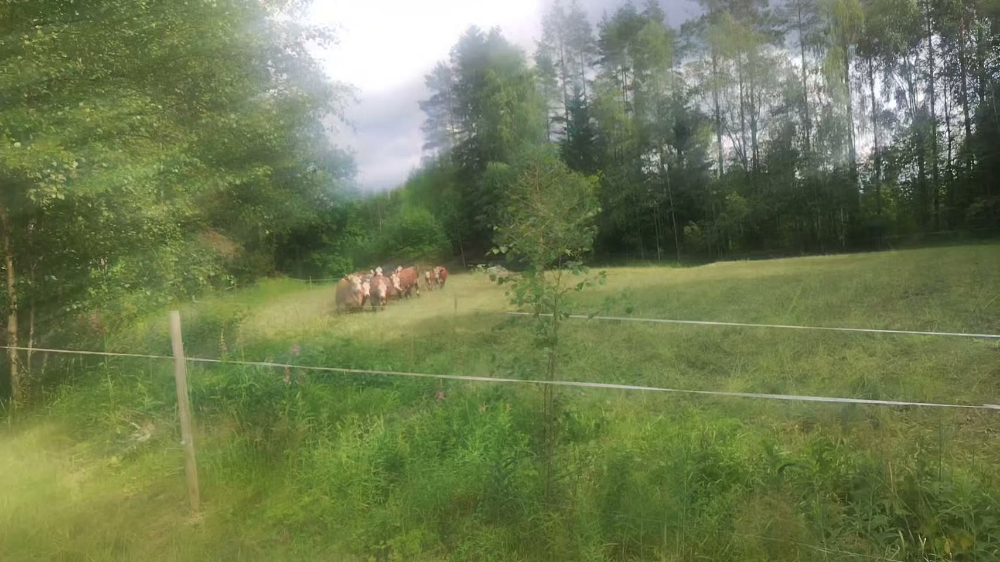

Tilan tarinaGårdens historiaThe farm story
Pohjanmaan tasangot,
skotlantilainen rotu.
Österbottens slätter,
en skotsk ras.
The Ostrobothrian plains,
a Scottish breed.
Larvamäen tila aloitti ylämaankarjan kasvattamisen vuonna 2012 Pojanluomassa, Ilmajoella. Laajoilla Pohjanmaan laidunalueilla ylämaankarja viihtyy erinomaisesti — rotu on tottunut karuihin olosuhteisiin, ja Etelä-Pohjanmaan rehevät niityt tarjoavat sille ihanteelliset puitteet. Larvamäen gård påbörjade uppfödning av Highlandnötkreatur år 2012 i Pojanluoma, Ilmajoki. På de vida österbottniska betesmarkerna trivs Highlands utmärkt — rasen är van vid hårda förhållanden och de frodiga ängarna i Södra Österbotten erbjuder idealiska betingelser. Larvamäen farm began raising Highland cattle in 2012 in Pojanluoma, Ilmajoki. Across the wide Ostrobothrian pastures, Highland cattle thrive exceptionally well — the breed is accustomed to rugged conditions, and the lush meadows of South Ostrobothnia offer it an ideal setting.
Emolehmätuotannossa vasikka kasvaa emon kanssa luonnollisesti ensimmäiset kuukaudet. Hidas kasvu ja runsas liikunta laitumella tuottavat lihaa, jonka maku ja rakenne erottuvat tehotuotannosta. Tämä on sen verran yksinkertaista. I dikalvsproduktionen växer kalven naturligt med sin mamma under de första månaderna. Långsam tillväxt och riklig motion på bete ger kött vars smak och konsistens tydligt skiljer sig från intensivproduktion. Det är så enkelt. In cow-calf production, the calf grows naturally with its mother for the first months of life. Slow growth and ample movement on pasture produce beef whose flavour and texture stand apart from intensive production. It really is that simple.
"Eläimellä pitää olla tilaa olla eläin." "Djuret måste ha utrymme att vara ett djur." "An animal must have room to be an animal."
